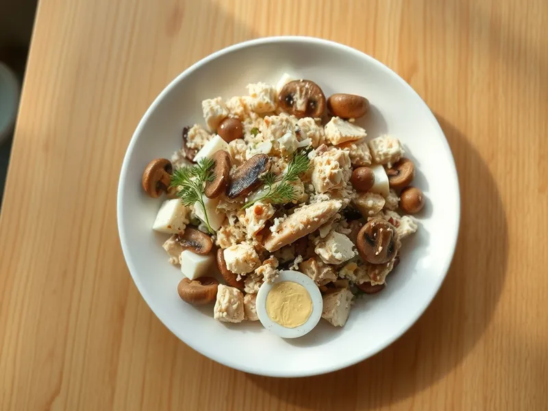

Фото: Иллюстрация ИИ, Cloudflare Workers AI
Салат с курицей, жареными грибами и сыром
Сытный домашний салат из курицы, шампиньонов с луком, яиц и сыра
30 мин4 порц.456 ккал на порциюБ 35 · Ж 33 · У 5Русская кухня
Продукты на 4 порц.
- Куриное филе350 г
- Шампиньоны300 г
- Лук репчатый1 шт
- Яйцо куриное3 шт
- Сыр твёрдый80 г
- Растительное масло2 ст. л.
- Майонез3 ст. л.
- Соль1 ч. л.
- Укроп по желаниюпо вкусу
Как готовить
- Опустите филе в кипящую подсоленную воду и варите 15 минут на среднем огне, пока сок при проколе не станет прозрачным. В соседней кастрюле сварите яйца 10 минут.
- Пока варится курица, нарежьте грибы пластинами, лук мелко. Обжарьте в масле на среднем огне 8-10 минут, пока жидкость не выпарится и грибы не подрумянятся. Посолите и остудите.
- Остудите курицу в холодной воде и нарежьте кубиками, яйца нарежьте кубиками, сыр натрите на крупной тёрке.
- Смешайте курицу, грибы с луком, яйца и сыр, заправьте майонезом. Посыпьте укропом.
Совет. Грибы солите в конце жарки, иначе они пустят сок и будут тушиться, а не жариться. Курицу можно взять готовую, тогда салат собирается за 15 минут.